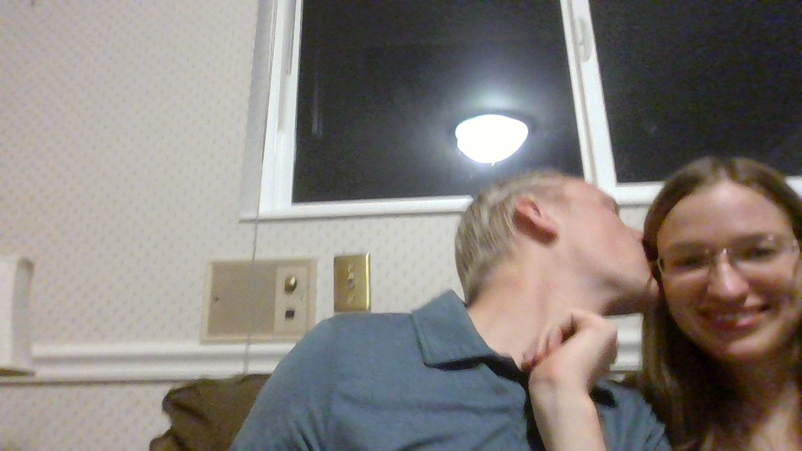

The above picture is of my wonderful bride, Emily. And I'm there too. I'm a Pre-law student at Brigham Young University in my second year of college.
I've been at my current job, a member service representative at Utah Community Credit Union, for about a year. My goal is to become a Constitutional lawyer.
Random Things I Like
The Emperors New Groove. Such a good movie.
First off, Kronk. Brilliant character design.
The dialogue is so quotable. Never been matched.
Kuzko randomly jumping in to offer his thoughts for the first part of the movie. So good.
80s Rock. Music peaked in the 80s and has gone downhill since.